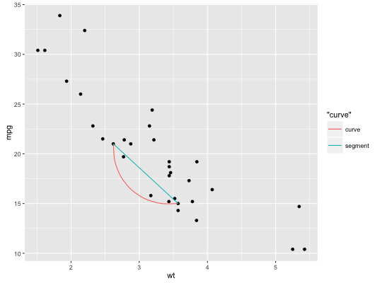
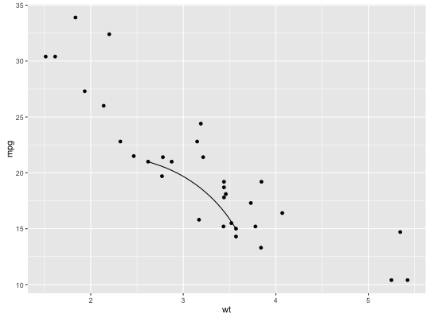
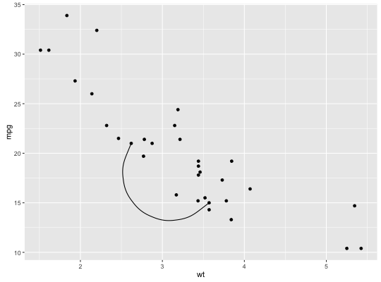
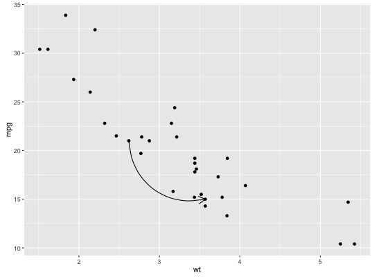
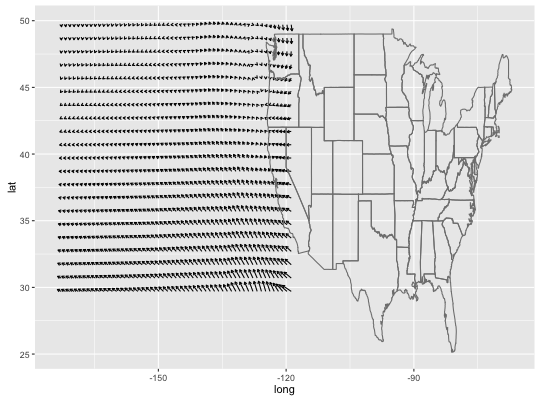
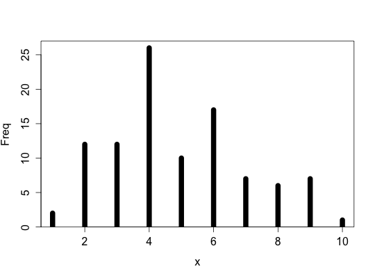
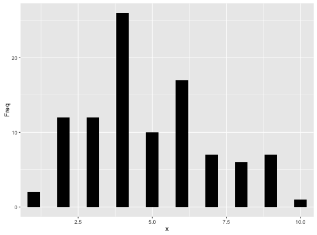

geom_curve(mapping = NULL, data = NULL, stat = "identity", position = "identity", curvature = 0.5, angle = 90, ncp = 5, arrow = NULL, lineend = "butt", na.rm = FALSE, inherit.aes = TRUE, ...)geom_segment(mapping = NULL, data = NULL, stat = "identity", position = "identity", arrow = NULL, lineend = "butt", na.rm = FALSE, show.legend = NA, inherit.aes = TRUE, ...)
aes or
aes_. If specified and inherit.aes = TRUE (the
default), is combined with the default mapping at the top level of the
plot. You only need to supply mapping if there isn't a mapping
defined for the plot.FALSE (the default), removes missing values with
a warning. If TRUE silently removes missing values.FALSE, overrides the default aesthetics,
rather than combining with them. This is most useful for helper functions
that define both data and aesthetics and shouldn't inherit behaviour from
the default plot specification, e.g. borders.curveGrob.NA, the default, includes if any aesthetics are mapped.
FALSE never includes, and TRUE always includes.geom_segment draws a straight line between points (x1, y1) and
(x2, y2). geom_curve draws a curved line.
geom_segment understands the following aesthetics (required aesthetics are in bold):
x
xend
y
yend
alpha
colour
linetype
size
b <- ggplot(mtcars, aes(wt, mpg)) + geom_point() df <- data.frame(x1 = 2.62, x2 = 3.57, y1 = 21.0, y2 = 15.0) b + geom_curve(aes(x = x1, y = y1, xend = x2, yend = y2, colour = "curve"), data = df) + geom_segment(aes(x = x1, y = y1, xend = x2, yend = y2, colour = "segment"), data = df)
b + geom_curve(aes(x = x1, y = y1, xend = x2, yend = y2), data = df, curvature = -0.2)
b + geom_curve(aes(x = x1, y = y1, xend = x2, yend = y2), data = df, curvature = 1)
b + geom_curve( aes(x = x1, y = y1, xend = x2, yend = y2), data = df, arrow = arrow(length = unit(0.03, "npc")) )
ggplot(seals, aes(long, lat)) + geom_segment(aes(xend = long + delta_long, yend = lat + delta_lat), arrow = arrow(length = unit(0.1,"cm"))) + borders("state")
# You can also use geom_segment to recreate plot(type = "h") : counts <- as.data.frame(table(x = rpois(100,5))) counts$x <- as.numeric(as.character(counts$x)) with(counts, plot(x, Freq, type = "h", lwd = 10))
ggplot(counts, aes(x, Freq)) + geom_segment(aes(xend = x, yend = 0), size = 10, lineend = "butt")
geom_path and geom_line for multi-
segment lines and paths.
geom_spoke for a segment parameterised by a location
(x, y), and an angle and radius.